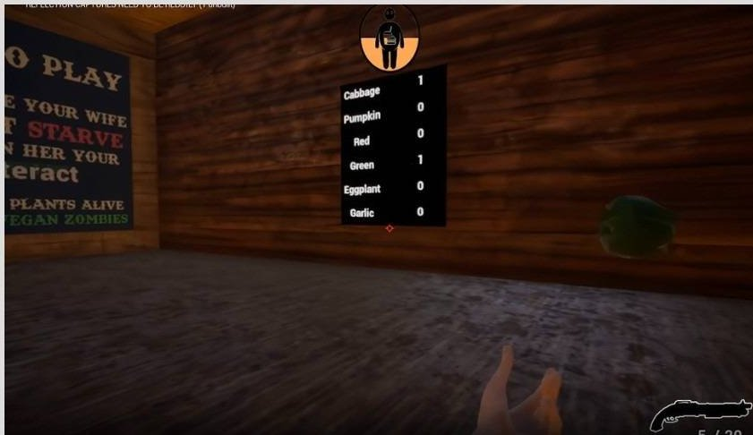
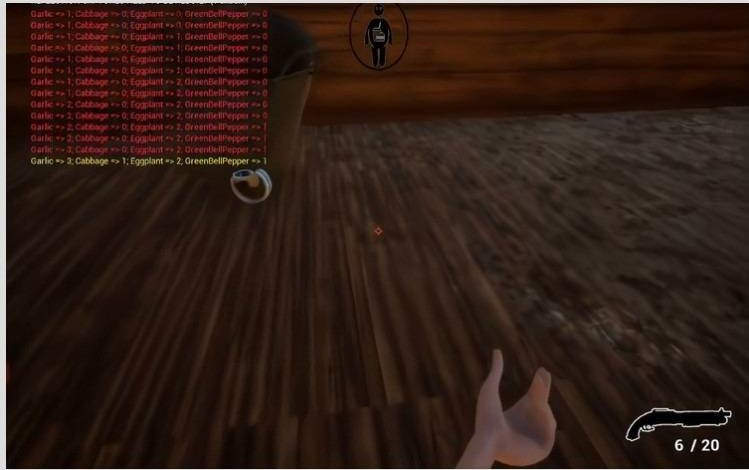

Vegan Zombie: Crop Apocalypse
First-person survival · Unreal Engine 5 · developed & designed solo
A first-person survival romp set in the Australian outback: zombies want your crops, and
you defend the farm shotgun-in-hand while gathering vegetables to complete randomized
recipes. The interesting part is the systems work. A procedural recipe system generates a new recipe each run and live-tracks collected ingredients
against it (requirements printed in yellow, current inventory state in red, updated
every time you bank ingredients), which is what makes each run replayable rather than
memorizable. Completing recipes grants randomized buffs (move speed or money) that feed a light economy loop.
Project trailer
Combat got the same systems treatment: a zombie health model (100 HP), tuned hitboxes,
aim-detection improvements, health-bar widgets, and a shotgun with realistic spread and
distance-based damage falloff on a parabolic curve:
// Shotgun damage: 100 at point-blank, parabolic falloff to a 5-damage floor
damage = (distance <= 50)
? 100 * pow(1 - distance / 50, 2)
: 5;
Presentation-layer details carried the polish: a live vegetable-count 3D widget wired to
the in-world collection bucket, a settings menu with functional graphics options, and
quality-of-life fixes like vegetables no longer de-spawning in the bucket. Each landed and was documented in a dated devlog.
Systems shipped
- Procedural recipe system with live ingredient tracking and per-run generation.
- Parabolic damage falloff with realistic shotgun spread.
- Zombie health system, tuned hitboxes, and aim detection.
- In-world 3D widgets: vegetable counts, health bars.
- Settings menu with functional graphical options.
Challenges & Learnings
- Randomization needs guardrails to stay fun: recipes are generated, but tracking keeps progress legible.
- Damage curves are feel, expressed as math: the parabola was tuned by playtest, then frozen as a formula.
- Public devlogs create accountability: every entry shipped visible progress with screenshots.
From the devlogs

1/15/23
Settings menu, zombie health system (100 HP), shotgun damage-range calculations.

1/16/23
Better aim detection, fixed hitboxes, live vegetable-count 3D widget.

1/18/23
Procedural recipe system: generated recipes with live ingredient tracking.